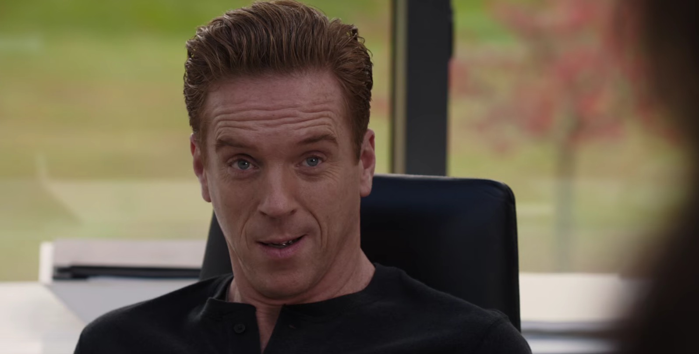

01
阿克斯家 · 生日布置中
买下末日之后的位置

剧情事实瓦格斯 用 VR 向阿克斯展示豪华末日地堡，赠予代表预留席位的硬币，并说自己已付三十六万美元订金。阿克斯问他是否也订了位置；瓦格斯 宁愿留在外面。生日首先出现的礼物，是一张关于未来安全的想象。[1][2]
这一场为什么重要 · 个人解读
这里出售的并非已经到来的灾难，而是有钱人仍能挑选结局的信心。瓦格斯 愿意替老板准备退路，却把自己排除在重建人类的蓝图之外。玩笑里有自我否定，也有两人的关系习惯：他把照料给了对方，把混乱留给自己。硬币因而从开场就不只是奢侈品。
因此 → 安全被做成一份礼物，但阿克斯尚未决定是否接受这种生活。